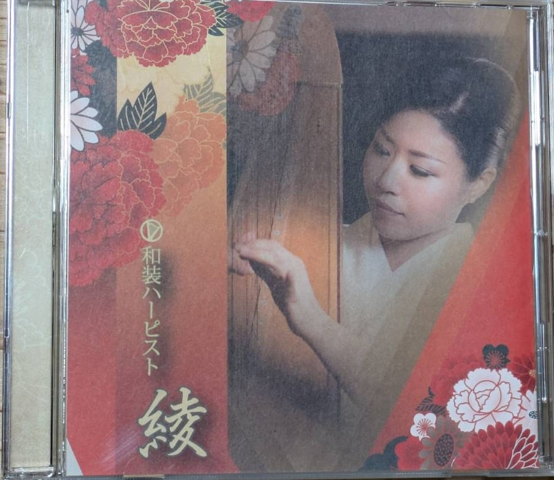

CD紹介
本ページでは、講師の演奏活動の一環として制作されたCDをご紹介します。
ハープの音色が、日常の中で静かなひとときをもたらすことを願い制作された作品です。

和のこころ 〜ハープで奏でるやすらぎの調べ〜
日本の四季や情景、そして日本人が大切にしてきた 「和のこころ」をテーマに制作したハープ作品集です。
西洋楽器であるハープの音色に、 日本の旋律や間（ま）の美しさを重ね、 日常の中でそっと寄り添う音楽を目指しました。
初めてハープの音色に触れる方にも、 静かな時間を楽しんでいただける一枚となっています。
収録曲
- さくら 〜日本古謡より〜
- 故郷
- 荒城の月
- 紅葉
- 浜辺の歌
- 宵待草
- ふるさとの風景
- やすらぎの調べ（オリジナル）
※ 本CDは講師個人の演奏活動として制作された作品です。
講師公式サイトはこちらCDのご購入について
本ページでご紹介しているCDは、 講師の演奏活動の一環として制作された作品です。
ご購入をご希望の方は、 講師公式サイトまたはお問い合わせ先より 個別にご案内させていただいております。
※ CDの制作・販売・配布等は、講師の個人活動として行っているものです。
ハープクラブの活動内容・参加費用・運営とは直接の関係はありません。